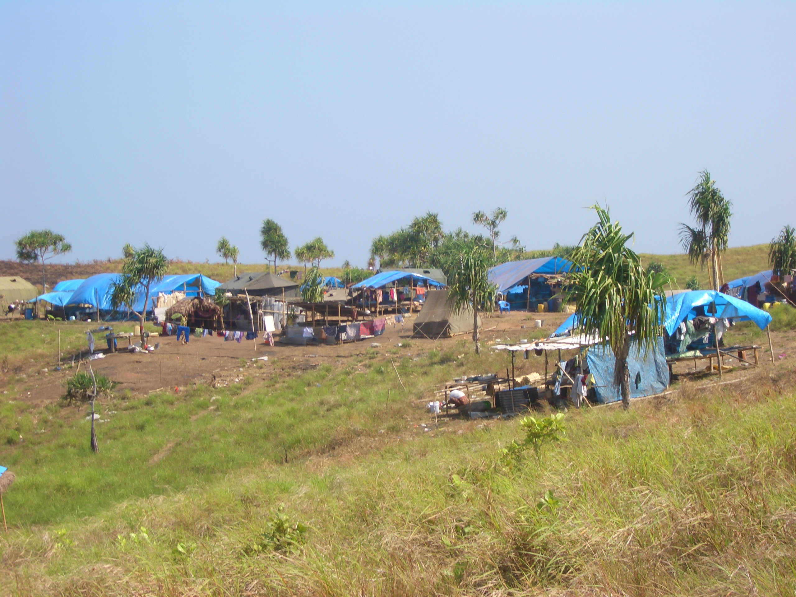

- Title Page
- Introduction
- The Islands and the Anthropologist
- Tsunami and First Response
- Wading In
- Second Tsunami
- In Search of Axes
- Steering a Sustainable Course
- Steering Committee
- Exchange Visit
- Nirnay Means Decision
- Up and Running
- Caritas Leans In
- Singh Sounds a Warning
- Midcourse Correction
- The SOPHIA Experiment
- Taking Stock
- SOPHIA Reports
The SOPHIA Experiment
It took six months to organize the Himalaya retreat, which was held in February 2007. Billed as a “mutual capacity building workshop,” it was in fact an intensive course in organizational development for the NYA delegates, who included Rasheed and 15 others chosen by local leaders. The goal was to jumpstart a follow-up project with NYA that would result, by September 2007, in an effective community organization governed by a strong management team, compliant with Indian laws and regulations, able to define future projects and tasks, and committed to “sound procedures for planning, decision-making, managing finances and logistics.”[70]
It was high-level work. A legal advisor gave a presentation on the Indian Companies Act, Section 25, governing nonprofits and FCRA compliance. A government advisor spoke about advocacy. Fischer-Kowalski produced a three-color organization chart that featured arrows and numbered tasks. There were bar graphs, SWOT exercises, and advice on what to do if, for example, an organization found itself short of cash (“reduce costs”) or flush with cash (“save for next year”). Sustainability was explained once again, this time employing a pictogram of a flourishing tree. The Nicobarese delegation appeared interested, if somewhat overwhelmed.[71]

© Simron Singh
A temporary settlement in the Nicobars
The meeting with the Van Gujjars was harder to assess. The Van Gujjars were the water buffalo herders that Singh had worked with a decade earlier. Their fight to retain an indigenous lifeway in the face of a “fence-and-protect” approach to forest conservation had been an Indian cause célèbre. Fischer-Kowalski hoped that the example of the nomads’ hard work, modest lifestyle, and cultural integrity would inspire the Nicobarese to turn away from the path of over-consumption, and take more responsibility and initiative for their sustainable future. Sitting cross-legged in a forest glade, the two sets of tribesmen drank tea and talked shop. The Nicobarese were respectful. Fischer-Kowalski was encouraged.
On the last day of the workshop, Fischer-Kowalski dispatched a runner to purchase a dozen caps. To each, she taped a slip of paper identifying a role or responsibility for work going forward: “researcher,” “mediator,” “financer,” “officer in charge,” “note taker” and so on. First she piled the caps on the participants currently performing those duties: Singh, Rasheed, and Fischer-Kowalski each wore many hats. Then she took back the caps and began redistributing them. “Who will take this responsibility? Who will take that one?” She hoped the message of self-help was clear.
Nicobarese on retreat in the Himalayas
© Aftermath-The Second Flood, Golden Girls Filmproduktion, 2014
Renewed energy. The Vienna participants pronounced the workshop “very exciting,” “helpful,” and “successful” in the sense that “the participating NYA delegates finally actively accepted certain tasks and responsibilities as their own.”[72] Back in the islands in March 2007, Singh and Ramanujam spent another two weeks with the NYA leadership team working on specific skills: writing letters and field reports, taking minutes, reading budgets, using computers. They quizzed them on general knowledge about the islands and reviewed what they’d learned among the Van Gujjars. They made practice field visits and drafted sample project proposals in Hindi. They even practiced arguing, a behavior traditionally frowned upon in Nicobarese culture. Singh felt the NYA was making progress, that their situation was becoming more “rational.”
In April 2007, SOPHIA assumed remote management of the NYA team and its capacity building efforts, relieving Singh and Ramanujam of their training and facilitation work. SOPHIA communicated with the NYA’s newly designated “CEO,” Ameen Ismail, by phone and fax, and followed up on tasks and goals. In an interim report in June, SOPHIA documented some progress. Elections for the management team had been scheduled, job descriptions had been drafted, five field officer positions were being developed, a six-month budget had been finalized, and two NYA staffers were headed to Port Blair for training in basic financial management. Three preliminary project proposals were in the works and would be ready for SIF approval by fall. SOPHIA was especially pleased with the group’s outreach into the community. “NYA staffs [sic] were warmly received by [village] captains,” SOPHIA reported, “and they showed immense interest in NYA and planning process.” The intervention seemed to be working.[73]
[70] SOPHIA, “Interim Report for ‘Start-Up Project,’” June 2007, in SIF files.
[71] Simron Jit Singh, “Mutual Capacity Building Workshop, Dehradun, India, 17-26 February 2007,” PowerPoint presentation for the 6th SIF Steering Committee Meeting, July 5, 2007, in SIF Files.
[72] Notes and minutes for the 6th SIF Steering Committee Meeting, July 5, 2007, in SIF files.
[73] SOPHIA, “Interim Report for ‘Start-Up Project,’”op. cit.
Video - http://www.aftermath-thesecondflood.net/